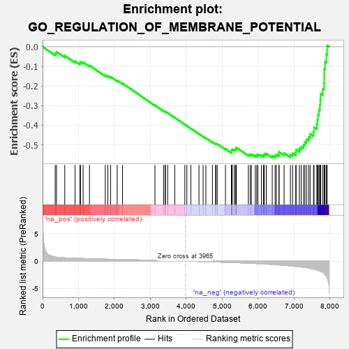
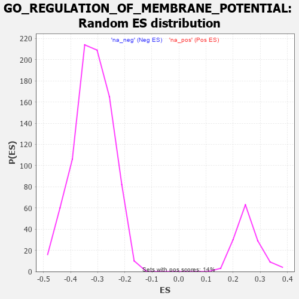

| | | Dataset | 7d |
| Phenotype | NoPhenotypeAvailable |
| Upregulated in class | na_neg |
| GeneSet | GO_REGULATION_OF_MEMBRANE_POTENTIAL |
| Enrichment Score (ES) | -0.56557906 |
| Normalized Enrichment Score (NES) | -1.7723186 |
| Nominal p-value | 0.0 |
| FDR q-value | 0.02056302 |
| FWER p-Value | 0.591 |
Table: GSEA Results Summary

Fig 1: Enrichment plot: GO_REGULATION_OF_MEMBRANE_POTENTIAL
Profile of the Running ES Score & Positions of GeneSet Members on the Rank Ordered List
| PROBE | GENE SYMBOL | GENE_TITLE | RANK IN GENE LIST | RANK METRIC SCORE | RUNNING ES | CORE ENRICHMENT | | 1 | GSK3A | | | 351 | 0.745 | -0.0327 | No |
| 2 | BAX | | | 387 | 0.711 | -0.0259 | No |
| 3 | KCND2 | | | 617 | 0.590 | -0.0456 | No |
| 4 | STOX1 | | | 905 | 0.506 | -0.0739 | No |
| 5 | AKT1 | | | 1040 | 0.476 | -0.0834 | No |
| 6 | MEF2C | | | 1054 | 0.473 | -0.0776 | No |
| 7 | SRC | | | 1128 | 0.459 | -0.0795 | No |
| 8 | KCNH7 | | | 1305 | 0.427 | -0.0951 | No |
| 9 | SLMAP | | | 1744 | 0.346 | -0.1451 | No |
| 10 | FMR1 | | | 1816 | 0.334 | -0.1488 | No |
| 11 | GLRA2 | | | 1892 | 0.321 | -0.1533 | No |
| 12 | KCNC2 | | | 2075 | 0.295 | -0.1717 | No |
| 13 | GRIK3 | | | 2224 | 0.272 | -0.1861 | No |
| 14 | MTMR2 | | | 3126 | 0.133 | -0.2982 | No |
| 15 | SMAD7 | | | 3369 | 0.093 | -0.3274 | No |
| 16 | KCNK1 | | | 3413 | 0.088 | -0.3315 | No |
| 17 | KCTD7 | | | 3417 | 0.088 | -0.3305 | No |
| 18 | CDK5 | | | 3480 | 0.080 | -0.3370 | No |
| 19 | ABCD1 | | | 3677 | 0.047 | -0.3611 | No |
| 20 | GLRA1 | | | 3957 | 0.001 | -0.3965 | No |
| 21 | PARP1 | | | 4014 | -0.010 | -0.4034 | No |
| 22 | ABL1 | | | 4125 | -0.027 | -0.4170 | No |
| 23 | ADRB2 | | | 4352 | -0.068 | -0.4445 | No |
| 24 | LRRK2 | | | 4467 | -0.087 | -0.4576 | No |
| 25 | NTRK2 | | | 4543 | -0.104 | -0.4654 | No |
| 26 | PXK | | | 4726 | -0.144 | -0.4862 | No |
| 27 | P2RX4 | | | 4813 | -0.161 | -0.4946 | No |
| 28 | WDR1 | | | 4824 | -0.163 | -0.4933 | No |
| 29 | DLG1 | | | 4860 | -0.169 | -0.4950 | No |
| 30 | DRD2 | | | 5088 | -0.221 | -0.5203 | No |
| 31 | SSH1 | | | 5254 | -0.258 | -0.5371 | No |
| 32 | SCN1A | | | 5260 | -0.261 | -0.5336 | No |
| 33 | PTEN | | | 5262 | -0.261 | -0.5296 | No |
| 34 | RIMS2 | | | 5272 | -0.265 | -0.5266 | No |
| 35 | CELF4 | | | 5275 | -0.266 | -0.5226 | No |
| 36 | NPY2R | | | 5331 | -0.281 | -0.5251 | No |
| 37 | MPP2 | | | 5367 | -0.288 | -0.5250 | No |
| 38 | GRIN1 | | | 5381 | -0.291 | -0.5221 | No |
| 39 | DLG4 | | | 5388 | -0.293 | -0.5182 | No |
| 40 | PRDX3 | | | 5389 | -0.293 | -0.5135 | No |
| 41 | DGKI | | | 5725 | -0.384 | -0.5499 | No |
| 42 | GLRB | | | 5776 | -0.398 | -0.5499 | No |
| 43 | BEST2 | | | 5811 | -0.408 | -0.5478 | No |
| 44 | KCNQ1 | | | 5918 | -0.441 | -0.5542 | No |
| 45 | ACTN2 | | | 5960 | -0.458 | -0.5522 | No |
| 46 | KCNH6 | | | 5988 | -0.467 | -0.5482 | No |
| 47 | UBB | | | 6090 | -0.503 | -0.5531 | No |
| 48 | SCN9A | | | 6146 | -0.518 | -0.5518 | No |
| 49 | GRID2 | | | 6170 | -0.528 | -0.5464 | No |
| 50 | KCNH8 | | | 6225 | -0.545 | -0.5446 | No |
| 51 | TRPM4 | | | 6390 | -0.612 | -0.5557 | Yes |
| 52 | GLRA3 | | | 6469 | -0.648 | -0.5553 | Yes |
| 53 | MFN1 | | | 6502 | -0.663 | -0.5489 | Yes |
| 54 | P2RX5 | | | 6576 | -0.699 | -0.5471 | Yes |
| 55 | CLN3 | | | 6580 | -0.699 | -0.5364 | Yes |
| 56 | GSK3B | | | 6719 | -0.768 | -0.5417 | Yes |
| 57 | HCN1 | | | 6895 | -0.865 | -0.5502 | Yes |
| 58 | SCN4A | | | 6955 | -0.910 | -0.5432 | Yes |
| 59 | CTNS | | | 7044 | -0.965 | -0.5391 | Yes |
| 60 | GRM5 | | | 7053 | -0.969 | -0.5248 | Yes |
| 61 | CFTR | | | 7143 | -1.030 | -0.5198 | Yes |
| 62 | TSPO | | | 7194 | -1.065 | -0.5092 | Yes |
| 63 | HCN4 | | | 7260 | -1.134 | -0.4995 | Yes |
| 64 | ANK2 | | | 7298 | -1.170 | -0.4857 | Yes |
| 65 | GPD1L | | | 7343 | -1.215 | -0.4720 | Yes |
| 66 | GRM1 | | | 7404 | -1.272 | -0.4595 | Yes |
| 67 | KCNB1 | | | 7444 | -1.327 | -0.4434 | Yes |
| 68 | GRIK1 | | | 7538 | -1.454 | -0.4322 | Yes |
| 69 | GRIK2 | | | 7552 | -1.471 | -0.4105 | Yes |
| 70 | KCNN2 | | | 7629 | -1.611 | -0.3947 | Yes |
| 71 | GRIA3 | | | 7648 | -1.642 | -0.3709 | Yes |
| 72 | HCN2 | | | 7662 | -1.668 | -0.3462 | Yes |
| 73 | ANK3 | | | 7690 | -1.740 | -0.3221 | Yes |
| 74 | BOK | | | 7715 | -1.817 | -0.2963 | Yes |
| 75 | ASIC1 | | | 7726 | -1.838 | -0.2685 | Yes |
| 76 | PANK2 | | | 7736 | -1.866 | -0.2401 | Yes |
| 77 | GRIK5 | | | 7792 | -2.044 | -0.2147 | Yes |
| 78 | GRIK4 | | | 7832 | -2.234 | -0.1843 | Yes |
| 79 | KCNC1 | | | 7835 | -2.249 | -0.1489 | Yes |
| 80 | GRIA1 | | | 7836 | -2.260 | -0.1131 | Yes |
| 81 | GRID1 | | | 7858 | -2.465 | -0.0767 | Yes |
| 82 | CAV3 | | | 7896 | -2.739 | -0.0381 | Yes |
| 83 | ASIC2 | | | 7917 | -2.995 | 0.0068 | Yes |
Table: GSEA details [plain text format]

Fig 2: GO_REGULATION_OF_MEMBRANE_POTENTIAL: Random ES distribution
Gene set null distribution of ES for GO_REGULATION_OF_MEMBRANE_POTENTIAL